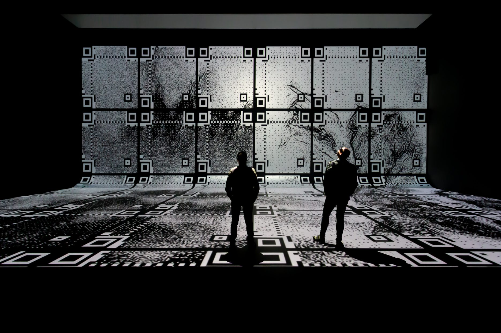
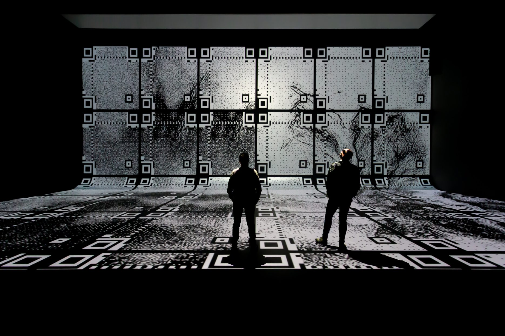

The home of new media art. Discover large scale, multi-sensory exhibitions which challenge assumptions and open minds. We seek, show and question what is Nxt.

The home of new media art. Discover large scale, multi-sensory exhibitions which challenge assumptions and open minds. We seek, show and question what is Nxt.

 

Information:
Nxt Museum, located in North Amsterdam, is the first museum in the Netherlands dedicated to new media art.
Focusing on art that utilizes modern tools, the museum believes that artistic expression reflects contemporary times.
The space is specifically designed to explore dynamic and unbound new media art, generating movement in various forms.
Nxt Museum serves as a platform for creatives to bring their visions to life, aiming to facilitate new iterations of creative expression and explore the future's endless possibilities.

tripadvisor:
"Excellent and innovative.
Two granddaughters age 11 and 8 were captivated and greatly amused.
Adults should make an effort to get involved while losing some inhibitions.
Will not be for everyone if you are only interested in 'traditional' art, there are plenty of elders to be found.
A bit expensive for a family, perhaps cheaper tickets for plaice children? We noticeably 2 hours, which is our usual maximum time.
Well done everyone."
google reviews:
"A beautiful exhibition with new media.
Suitable for all ages.
We went with a group of students from the upper secondary school.
Attention is held.
Lots of interaction between the viewer and the art through lamps and movement.
Impressive projections and interesting subjects.
Highly recommended (duration: If you walk quickly you can get through it in half an hour.
If you take it all in, it can take an hour)."